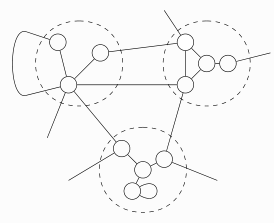

Michael Monaco
Table of Contents

| Affiliation | Purdue University |
| City | West Lafayette, IN |
| monacom@purdue.edu | |
| Office | 405 in the Math building |
| Office Telephone | (765) 496-1077 |
I am a visiting assistant professor at Purdue University. Previously, I studied at Purdue and obtained my doctorate in Mathematics in 2024 under the supervision of Ralph Kaufmann. My research area is algebraic topology, particularly aspects related to operadic structures.
I am on the job market for the 2024–2025 school year.
Research
In my dissertation, I developed a general formalism for defining operads and related structures as plethysm monoids and characterized which structures can be defined this way using a generalization of the Baez–Dolan plus construction. Most of this was published in 1. The details of this generalized plus construction were written up in the preprint 3 where we give a generalization of the Baez–Dolan plus construction to arbitrary categories and monoidal categories. We also give conditions for when the plus construction yields a Feynman category, characterized plus constructions as corepresenting categories, and proved that the plus construction satisfies the principle of equivalence for the first time. Another motivation for developing generalized plus constructions is that it leads to a generalized opetopic principle like the one described by Baez–Dolan and used implictly by Getzler–Kapranov. I adopt this perspective in 2 by realizing specific Feynman categories as plus constructions of unique factorization categories and considered the resulting notion of an algebra over generalized operadic structures.
In my current project, I build on this plethysm formulation by considering homological aspects and their relation to Hopf algebras. I recently gave a talk about this research in the talks 1 and 3. I am also looking forward to using this as a foundation for undergraduate research.
Papers
- The plethysm product, plus and element constructions. (PDF) with Ralph Kaufmann,
Published in Comptes Rendus–Mathématique, Volume 362, p.357-411 (2024) - Calculations for plus constructions
Published in Contemporary Mathematics Volume 802, p.139-160 (2024) - Plus constructions for categories with Ralph Kaufmann,
Preprint (arXiv:2209.06121).
Talks
- A formalism for operadic structures with applications to Hopf algebras and \(B_+\) operators
- University of Louisiana at Lafayette, Topology seminar, February 2024
- Princeton University, Topology seminar, February 2024
- The Plus Construction and Monoid Definitions of Operad-Like Structures
- Penn Deformation theory seminar, October 2022
- University of Minnesota Topology seminar, October 2022
- Generalized plethysms and homological applications (contributed)
- Algebraic structures in Topology (San Juan, Puerto Rico), June 2024
- Equivariant bimodule algebras and their representations (contributed)
- Maurice Auslander International Conference, April 2023
- The Plus Construction on Monoidal Categories (contributed)
- AMS Central Sectional Meeting Special Session on Higher Structures in Topology, Geometry and Physics, March 2022
Awards
- Ross–Lynn Research Scholars Grant
- awarded by Purdue University for June 2023 – June 2024
- Graduate School Summer Research Grant
- awarded by the Purdue Math Department for Summer 2022
- Graduate School Summer Research Grant
- awarded by the Purdue Math Department for Summer 2021